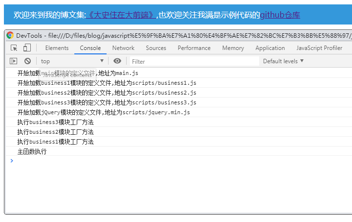
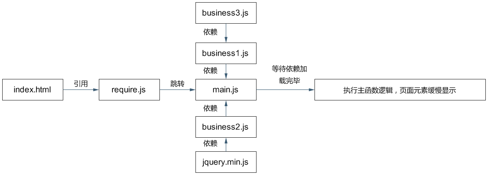

原文连接:https://www.cnblogs.com/dashnowords/p/10816039.html
——手把手教你造一个简易的require.js0.png)
示例代码托管在我的代码仓：http://www.github.com/dashnowords/blogs
博客园地址：《大史住在大前端》原创博文目录
华为云社区地址：【你要的前端打怪升级指南】
一. 概述
许多前端工程师沉浸在使用脚手架工具的快感中，认为require.js这种前端模块化的库已经过气了，的确如果只从使用场景来看，在以webpack为首的自动化打包趋势下，大部分的新代码都已经使用CommonJs或ES Harmony规范实现前端模块化，require.js的确看起来没什么用武之地。但是前端模块化的基本原理却基本都是一致的，无论是实现了模块化加载的第三方库源码，还是打包工具生成的代码中，你都可以看到类似的模块管理和加载框架，所以研究require.js的原理对于前端工程师来说几乎是不可避免的，即使你绕过了require.js,也会在后续学习webpack的打包结果时学习类似的代码。研究模块化加载逻辑对于开发者理解javascript回调的运行机制非常有帮助，同时也可以提高抽象编程能力。
二. require.js
2.1 基本用法
require.js是一个实现了AMD（不清楚AMD规范的同学请戳这里【AMD模块化规范】）模块管理规范的库(require.js同时也能够识别CMD规范的写法)，基本的使用方法也非常简单：
类库引入，在主页
index.html中引入require.js:<script src="require.js" data-main="main.js"></script>data-main自定义属性指定了require.js完成初始化后应该加载执行的第一个文件。在
main.js中调用require.config传入配置参数，并通过require方法传入主启动函数://main.js require.config(( baseUrl:'.', paths:{ jQuery:'lib/jQuery.min', business1:'scripts/business1', business2:'scripts/business2', business3:'scripts/business3' } )) require(['business1','business2'],function(bus1,bus2){ console.log('主函数执行'); bus2.welcome(); });模块定义通过
define函数定义define(id?:string, deps?:Array<string>, factory:function):any访问
index.html后的模块加载顺序：访问的顺序从
require方法执行开始打乱，main.js中的require方法调用声明了对business1和business2两个模块的依赖，那么最后一个参数（主方法）不会立即解析，而是等待依赖模块加载，当下载到定义business1模块的文件scripts/business1.js后，写在该文件中的define方法会被执行，此时又发现当前模块依赖business3模块，程序又会延迟生成business1模块的工厂方法（也就是scripts/business1.js中传入define方法的最后一个函数参数），转而先去加载business3这个模块，如果define方法没有声明依赖，或者声明的依赖都已经加载，就会执行传入的工厂方法生成指定模块，不难理解模块的解析是从叶节点开始最终在根节点也就是主工厂函数结束的。所以模块文件加载顺序和工厂方法执行顺序基本是相反的，最先加载的模块文件中的工厂方法可能最后才被运行（也可能是乱序，但符合依赖关系），因为需要等待它依赖的模块先加载完成，运行顺序可参考下图（运行结果来自第三节中的demo）：

2.2 细说API设计
require.js在设计上贯彻了多态原则，API非常精简。
模块定义的方法只有一个define，但是包含了非常多情况：
1个参数
function类型将参数判定为匿名模块的工厂方法，仅起到作用域隔离的作用。
object类型将模块识别为数据模块，可被其他模块引用。
2个参数
string+function | object第一参数作为模块名，第二参数作为模块的工厂方法或数据集。
array<string>+function | object第一参数作为依赖列表，第二参数作为匿名模块工厂方法或数据集。
3个参数
第一个参数作为模块名，第二个参数作为依赖列表，第三个参数作为工厂方法或数据集。
deps : array<string>依赖列表中成员的解析包含
/或./或../判定为依赖资源的地址
不包含上述字符
判定为依赖模块名
模块加载方法require也是诸多方法的集合:
1个参数
string类型按照模块名或地址来加载模块。
array类型当做一组模块名或地址来加载，无加载后回调。
2个参数
第一个参数作为依赖数组，第二个参数作为工厂方法。
在这样的设计中，不同参数类型对应的函数重载在
require.js内部进行判定分发，使得由用户编写的调用逻辑显得更加简洁一致。
三. 造轮子
作为前端工程师，只学会使用方法是远远不够的，本节中我们使用“造轮子”的方法造一个简易的require.js，以便探究其中的原理。本节使用的示例中，先加载require.js，入口文件为main.js,主逻辑中前置依赖为business1和business2两个模块，business1依赖于business3模块，business2依赖于jQuery。如下所示：

3.1 模块加载执行的步骤
上一节在分析require.js执行步骤时我们已经看到，当一个模块依赖于其他模块时，它的工厂方法（require或define的最后一个参数）是需要先缓存起来的，程序需要等待依赖模块都加载完成后才会执行这个工厂方法。需要注意的是，工厂方法的执行顺序只能从依赖树的叶节点开始，也就是说我们需要一个栈结构来限制它的执行顺序，每次先检测栈顶模块的依赖是否全部下载解析完毕，如果是，则执行出栈操作并执行这个工厂方法，然后再检测新的栈顶元素是否满足条件，以此类推。
define方法的逻辑是非常类似的，现在moduleCache中登记一个新模块，如果没有依赖项，则直接执行工厂函数，如果有依赖项，则将工厂函数推入unResolvedStack待解析栈，然后依次对声明的依赖项调用require方法进行加载。
我们会在每一个依赖的文件解析完毕触发onload事件时将对应模块的缓存信息中的load属性设置为true，然后执行检测方法，来检测unResolvedStack的栈顶元素的依赖项是否都已经都已经完成解析（解析完毕的依赖项在moduleCache中记录的对应模块的load属性为true）,如果是则执行出栈操作并执行这个工厂方法，然后再次运行检测方法，直到栈顶元素当前无法解析或栈为空。
3.2 代码框架
我们使用基本的闭包自执行函数的代码结构来编写requireX.js（示例中只实现基本功能）:
;(function(window, undefined){
//模块路径记录
let modulePaths = {
main:document.scripts[0].dataset.main.slice(0,-3) //data-main传入的路径作为跟模块
};
//模块加载缓存记录
let moduleCache = {};
//待解析的工厂函数
let unResolvedStack = [];
//匿名模块自增id
let anonymousIndex = 0;
//空函数
let NullFunc =()=>{};
/*moduleCache中记录的模块信息定义*/
class Module {
constructor(name, path, deps=[],factory){
this.name = name;//模块名
this.deps = deps;//模块依赖
this.path = path;//模块路径
this.load = false;//是否已加载
this.exports = {};//工厂函数返回内容
this.factory = factory || NullFunc;//工厂函数
}
}
//模块加载方法
function _require(...rest){
//...
}
//模块定义方法
function _define(...rest){
}
//初始化配置方法
_require.config = function(conf = {}){
}
/**
*一些其他的内部使用的方法
*/
//全局挂载
window.require = _require;
window.define = _define;
//从data-main指向开始解析
_require('main');
})(window);3.3 关键函数的代码实现
下面注释覆盖率超过90%了，不需要再多说什么。
- 加载方法
_require（省略了许多条件判断，只保留了核心逻辑）
function _require(...rest){
let paramsNum = rest.length;
switch (paramsNum){
case 1://如果只有一个字符串参数，则按模块名对待，如果只有一个函数模块，则直接执行
if (typeof rest[0] === 'string') {
return _checkModulePath(rest[0]);
}
break;
case 2:
if (Object.prototype.toString.call(rest[0]).slice(8,13) === 'Array' && typeof rest[1] === 'function'){
//如果依赖为空，则直接运行工厂函数，并传入默认参数
return _define('anonymous' + anonymousIndex++, rest[0], rest[1]);
}else{
throw new Error('参数类型不正确，require函数签名为(deps:Array<string>, factory:Function):void');
}
break;
}
}如果传入一个字符，则将其作为模块名传入_checkModulePath方法检测是否有注册路径，如果有路径则去获取定义这个模块的文件，如果传入两个参数，则运行_define方法将其作为匿名模块的依赖和工厂函数处理。
- 模块定义方法
_define
function _define(id, deps, factory){
let modulePath = modulePaths[id];//获取模块路径，可能是undefined
let module = new Module(id, modulePath, deps, factory);//注册一个未加载的新模块
moduleCache[id] = module;//模块实例挂载至缓存列表
_setUnResolved(id, deps, factory);//处理模块工厂方法延迟执行逻辑
}- 延迟执行工厂方法的函数
_setUnResolved
function _setUnResolved(id, deps, factory) {
//压栈操作缓存要延迟执行的工厂函数
unResolvedStack.unshift({id, deps,factory});
//遍历依赖项数组对每个依赖执行检测路径操作，检测路径存在后对应的是js文件获取逻辑
deps.map(dep=>_checkModulePath(dep));
}- 模块加载逻辑
_loadModule
function _loadModule(name, path) {
//如果存在模块的缓存，表示已经登记，不需要再次获取，在其onload回调中修改标记后即可被使用
if(name !== 'root' && moduleCache[name]) return;
//如果没有缓存则使用jsonp的方式进行首次加载
let script = document.createElement('script');
script.src = path + '.js';
script.defer = true;
//初始化待加载模块缓存
moduleCache[name] = new Module(name,path);
//加载完毕后回调函数
script.onload = function(){
//修改已登记模块的加载解析标记
moduleCache[name].load = true;
//检查待解析模块栈顶元素是否可解析
_checkunResolvedStack();
}
console.log(`开始加载${name}模块的定义文件,地址为${path}.js`);
//开始执行脚本获取
document.body.appendChild(script);
}- 检测待解析工厂函数的方法
_checkunResolvedStack
function _checkunResolvedStack(){
//如果没有待解析模块，则直接返回
if (!unResolvedStack.length)return;
//否则查看栈顶元素的依赖是否已经全部加载
let module = unResolvedStack[0];
//获取声明的依赖数量
let depsNum = module.deps.length;
//获取已加载的依赖数量
let loadedDepsNum = module.deps.filter(item=>moduleCache[item].load).length;
//如果依赖已经全部解析完毕
if (loadedDepsNum === depsNum) {
//获取所有依赖的exports输出
let params = module.deps.map(dep=>moduleCache[dep].exports);
//运行待解析模块的工厂函数并挂载至解析模块的exports输出
moduleCache[module.id].exports = module.factory.apply(null,params);
//待解析模块出栈
unResolvedStack.shift();
//递归检查
return _checkunResolvedStack();
}
}示例的效果是页面中提示语缓慢显示出来。的完整的示例代码可从篇头的github仓库中获取，欢迎点星星。